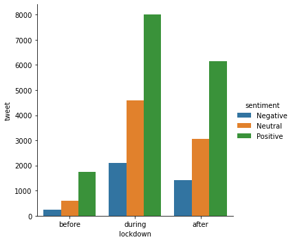
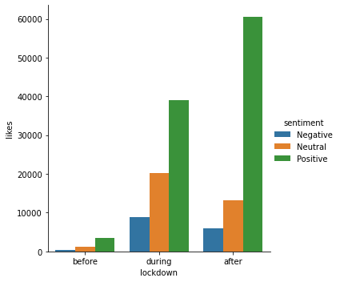
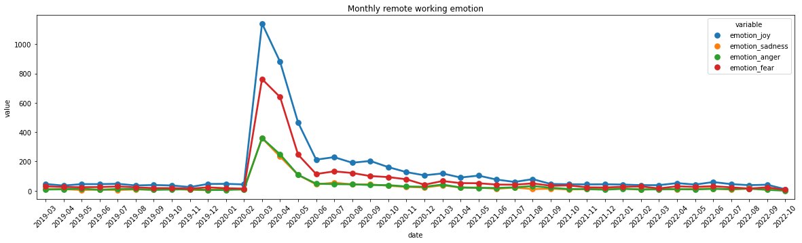

Code
import pandas as pd
import seaborn as sns
import matplotlib.pyplot as pltYan Shi
| author_id | username | author_followers | author_tweets | author_description | author_location | text | created_at | geo_id | retweets | ... | geo_name | states_abbrev | clean_text | no_stopwords_text | no_remotework_text | lematize_text | emotion | scores | compound_score | sentiment | |
|---|---|---|---|---|---|---|---|---|---|---|---|---|---|---|---|---|---|---|---|---|---|
| 0 | 2729932651 | TwelveRivers12 | 367 | 1862 | We strive to raise the bar of what it means to... | Austin, TX | #WFH but make it fashion (Twelve Rivers fashio... | 2020-12-19 20:00:14+00:00 | c3f37afa9efcf94b | 1 | ... | Austin, TX | TX | wfh but make it fashion twelve rivers fashion ... | wfh make fashion twelve rivers fashion office ... | make fashion twelve rivers fashion office big ... | make fashion twelve river fashion office big g... | neutral | {'neg': 0.0, 'neu': 0.834, 'pos': 0.166, 'comp... | 0.8674 | Positive |
| 1 | 389908361 | JuanC611 | 214 | 12248 | I'm a #BCB, craft beer drinkin #Kaskade listen... | Oxnard, CA | Step 2, in progress...\n#wfh #wfhlife @ Riverp... | 2020-12-19 02:56:54+00:00 | a3c0ae863771d69e | 0 | ... | Oxnard, CA | CA | step in progress wfh wfhlife riverpark | step progress wfh wfhlife riverpark | step progress wfhlife riverpark | step progress wfhlife riverpark | neutral | {'neg': 0.0, 'neu': 0.641, 'pos': 0.359, 'comp... | 0.4215 | Positive |
| 2 | 737763400118198277 | MissionTXperts | 828 | 1618 | Follow us on IG! @missiontxperts #FamousForExp... | Mission, TX | Congratulations on your graduation!!! Welcome ... | 2020-12-18 22:35:35+00:00 | 77633125ba089dcb | 1 | ... | Mission, TX | TX | congratulations on your graduation welcome to ... | congratulations graduation welcome missiontxpe... | congratulations graduation welcome missiontxpe... | congratulation graduation welcome missiontxper... | joy | {'neg': 0.0, 'neu': 0.566, 'pos': 0.434, 'comp... | 0.7845 | Positive |
| 3 | 522212036 | FitnessFoundry | 2693 | 14002 | Award Winning Personal Trainer| EMT-B 🚑 NSCA-R... | Boston and Malden, MA | Part 2 #HomeWorkout \n\n#OldSchool Jumping Jac... | 2020-12-18 19:07:33+00:00 | 75f5a403163f6f95 | 1 | ... | Malden, MA | MA | part homeworkout oldschool jumping jack variat... | part homeworkout oldschool jumping jack variat... | part homeworkout oldschool jumping jack variat... | part homeworkout oldschool jumping jack variat... | neutral | {'neg': 0.0, 'neu': 0.81, 'pos': 0.19, 'compou... | 0.7003 | Positive |
| 4 | 1931184464 | fixyourmattress | 1236 | 17479 | The only comfortable solution to SAGGING mattr... | USA | SAGGING bed❓ 🛏〰️🛏FIRM it up with MATTRESS HELP... | 2020-12-18 18:46:21+00:00 | 7df9a00dcf914d5e | 0 | ... | Plantation, FL | FL | sagging bed firm it up with mattress helper un... | sagging bed firm mattress helper mattress supp... | sagging bed firm mattress helper mattress supp... | sagging bed firm mattress helper mattress supp... | neutral | {'neg': 0.0, 'neu': 0.674, 'pos': 0.326, 'comp... | 0.8020 | Positive |
5 rows × 23 columns
import datetime
df['created_at']= df['created_at'].apply(lambda x: datetime.datetime.strptime(x,"%Y-%m-%d %H:%M:%S%z"))
df['date'] = df['created_at'].apply(lambda x: x.date())
df['year'] = df['created_at'].apply(lambda x: x.year)
df['month'] = df['created_at'].apply(lambda x: x.month)
df['tweet'] = 1during 14693
after 10606
before 2579
Name: lockdown, dtype: int64| lockdown | sentiment | author_id | author_followers | author_tweets | retweets | replies | likes | quote_count | compound_score | year | month | tweet | |
|---|---|---|---|---|---|---|---|---|---|---|---|---|---|
| 0 | before | Negative | 3.769505e+19 | 1257112.0 | 5025147.0 | 57.0 | 71.0 | 415.0 | 7.0 | -84.2040 | 498728.0 | 1607.0 | 247.0 |
| 1 | before | Neutral | 8.697684e+19 | 3433022.0 | 16200139.0 | 242.0 | 118.0 | 1122.0 | 22.0 | 0.0000 | 1197352.0 | 3741.0 | 593.0 |
| 2 | before | Positive | 2.759157e+20 | 9100106.0 | 47729277.0 | 711.0 | 345.0 | 3573.0 | 74.0 | 1030.6164 | 3511264.0 | 11402.0 | 1739.0 |
| 3 | during | Negative | 2.068842e+20 | 21434633.0 | 84407564.0 | 850.0 | 1151.0 | 8755.0 | 173.0 | -762.0527 | 4237960.0 | 8004.0 | 2098.0 |
| 4 | during | Neutral | 5.063449e+20 | 53033140.0 | 217158097.0 | 2679.0 | 1769.0 | 20307.0 | 514.0 | 0.0000 | 9267760.0 | 17770.0 | 4588.0 |
| 5 | during | Positive | 1.076227e+21 | 65728691.0 | 254783893.0 | 4694.0 | 3703.0 | 39131.0 | 746.0 | 4427.7021 | 16174140.0 | 31066.0 | 8007.0 |
| 6 | after | Negative | 3.050080e+20 | 16982001.0 | 71593556.0 | 668.0 | 585.0 | 5889.0 | 81.0 | -548.7395 | 2879550.0 | 10634.0 | 1425.0 |
| 7 | after | Neutral | 6.510789e+20 | 50729142.0 | 192736481.0 | 2091.0 | 1078.0 | 13242.0 | 324.0 | 0.0000 | 6153092.0 | 22588.0 | 3045.0 |
| 8 | after | Positive | 1.474055e+21 | 56700820.0 | 233804687.0 | 10092.0 | 2937.0 | 60528.0 | 2183.0 | 3495.4168 | 12399137.0 | 46103.0 | 6136.0 |
<seaborn.axisgrid.FacetGrid at 0x7fe926a27700>
<seaborn.axisgrid.FacetGrid at 0x7fe8a0f2be80>
(0.6460674157303371, 0.570837893712757, 0.785308536300677)From the plot we can tell that all sentiment expression increased, but the number of positive tweets increased significantly during lockdown, the high volume of positive remote work tweets has a strong impact in forming a collective emotions and swing others perceptions towards remote work. This can be demonstrated in number of retweets and number of likes, people clearly prefer positive remote work tweets and tend to spread them out after lockdown, which indicates the impact of collective emotions.
# aggregate date in month and explore ingranied emotion
per = df.date.dt.to_period('M')
df_agg_m = df.groupby(per).sum()
df_agg_m['date'] = df_agg_m.index
df_agg_m = df_agg_m.reset_index(drop = True).drop(columns = ['year', 'month', 'author_id', 'author_followers', 'author_tweets'])
df2 = pd.melt(df_agg_m, id_vars = ['date'], value_vars = ['emotion_joy', 'emotion_sadness', 'emotion_anger', 'emotion_fear'])
df2| date | variable | value | |
|---|---|---|---|
| 0 | 2019-03 | emotion_joy | 46.0 |
| 1 | 2019-04 | emotion_joy | 35.0 |
| 2 | 2019-05 | emotion_joy | 45.0 |
| 3 | 2019-06 | emotion_joy | 45.0 |
| 4 | 2019-07 | emotion_joy | 47.0 |
| ... | ... | ... | ... |
| 163 | 2022-06 | emotion_fear | 31.0 |
| 164 | 2022-07 | emotion_fear | 23.0 |
| 165 | 2022-08 | emotion_fear | 15.0 |
| 166 | 2022-09 | emotion_fear | 23.0 |
| 167 | 2022-10 | emotion_fear | 6.0 |
168 rows × 3 columns
Text(0.5, 1.0, 'Monthly remote working emotion')
Interesting, looks like both joy and fear increased during lockdown, why people are enjoy and why people are fear
# explore remote work tweet in joy and fear during lockdown
data_lockdown = df[(df['created_at'] >= Timestamp('2020-3-01 00:00:00+0000', tz='UTC'))&(df['created_at'] <= Timestamp('2020-7-01 00:00:00+0000', tz='UTC'))].reset_index(drop = True)
data_joy = data_lockdown[data_lockdown['emotion']=='joy'].reset_index(drop = True)
data_fear = data_lockdown[data_lockdown['emotion']=='fear'].reset_index(drop = True)#bi_gram
def get_gram(text):
return [' '.join(x) for x in text]
from nltk.util import ngrams
data_joy['bi_gram'] = data_joy['lematize_text'].apply(lambda x: (list(ngrams(x.split(), 2))))
data_joy['bi_gram'] = data_joy['bi_gram'].apply(lambda x: get_gram(x))
data_fear['bi_gram'] = data_fear['lematize_text'].apply(lambda x: (list(ngrams(x.split(), 2))))
data_fear['bi_gram'] = data_fear['bi_gram'].apply(lambda x: get_gram(x))#Tri_gram
data_joy['Tri_gram'] = data_joy['lematize_text'].apply(lambda x: (list(ngrams(x.split(), 3))))
data_joy['Tri_gram'] = data_joy['Tri_gram'].apply(lambda x: get_gram(x))
data_fear['Tri_gram'] = data_fear['lematize_text'].apply(lambda x: (list(ngrams(x.split(), 3))))
data_fear['Tri_gram'] = data_fear['Tri_gram'].apply(lambda x: get_gram(x))[('working home', 110),
('work home', 83),
('good morning', 72),
('happy hour', 64),
('look like', 51),
('zoom meeting', 48),
('home office', 40),
('feel like', 40),
('new normal', 33),
('happy friday', 33),
('work remotely', 31),
('zoom u', 30),
('co worker', 28),
('womeninbusiness womenintech', 28),
('covid coronavirus', 26),
('ability work', 26),
('happy monday', 24),
('conference call', 24),
('team meeting', 22),
('good thing', 22)][('ability work remotely', 25),
('womeninbusiness womenintech workingmom', 20),
('new webex work', 19),
('webex work bundle', 19),
('work bundle make', 19),
('bundle make much', 19),
('make much affordable', 19),
('much affordable everyone', 19),
('affordable everyone use', 19),
('everyone use webex', 19),
('use webex enterprise', 19),
('webex enterprise conferencing', 19),
('enterprise conferencing calling', 19),
('conferencing calling amp', 19),
('calling amp collaboration', 19),
('amp collaboration smb', 19),
('collaboration smb priceswebex', 19),
('smb priceswebex meeting', 19),
('priceswebex meeting webex', 19),
('meeting webex calling', 19)][('working home', 65),
('work home', 49),
('home office', 42),
('zoom u', 42),
('conference call', 39),
('look like', 35),
('zoom call', 26),
('covid coronavirus', 23),
('thomas capone', 22),
('watch u', 20),
('year old', 20),
('collaboration remotelearning', 18),
('standing desk', 16),
('remotejobs remoteworklife', 16),
('w briancurtisnbc', 15),
('north carolina', 15),
('nbcdfw w', 14),
('remotelearning remotejobs', 14),
('coronavirus covid', 14),
('new york', 13)][('remotelearning remotejobs remoteworklife', 14),
('collaboration remotelearning remotejobs', 13),
('thomas capone collaboration', 11),
('capone collaboration remotelearning', 11),
('remotejobs remoteworklife remoteemployees', 11),
('nbcdfw w briancurtisnbc', 9),
('lose weight make', 9),
('pm news nbcdfw', 7),
('selfie selfisolation wfhdailyheadgear', 7),
('selfisolation wfhdailyheadgear chapel', 7),
('wfhdailyheadgear chapel hill', 7),
('perry hall maryland', 7),
('zoom u call', 7),
('waltsable gmail com', 7),
('work home life', 7),
('news nbcdfw w', 6),
('chapel hill north', 6),
('hill north carolina', 6),
('coronavirus perry hall', 6),
('pm nbcdfw w', 5)]# topic model
import gensim
import gensim.corpora as corpora
from pprint import pprint
import pyLDAvis
import pyLDAvis.gensim_models as gensimvis
import gensim.corpora as corpora
def sent_to_words(sentences):
'''
tokenize words
'''
for sentence in sentences:
yield(gensim.utils.simple_preprocess(str(sentence), deacc=True)) #deacc=True removes punctuations
data_words = list(sent_to_words(data_joy['lematize_text'].values.tolist()))
# Create Dictionary
id2word = corpora.Dictionary(data_words)
# Create Corpus
texts = data_words
# Term Document Frequency
corpus = [id2word.doc2bow(text) for text in texts]
# number of topics
num_topics = 5
# Build LDA model
lda_model = gensim.models.ldamodel.LdaModel(corpus=corpus,
id2word=id2word,
num_topics=num_topics,
random_state=100,
update_every=1,
chunksize=100,
passes=10,
alpha='auto')
pyLDAvis.enable_notebook()
vis = gensimvis.prepare(lda_model, corpus, id2word, mds='mmds')
vis/Users/yanshi/opt/anaconda3/lib/python3.9/site-packages/pyLDAvis/_prepare.py:246: FutureWarning: In a future version of pandas all arguments of DataFrame.drop except for the argument 'labels' will be keyword-only
default_term_info = default_term_info.sort_values(
/Users/yanshi/opt/anaconda3/lib/python3.9/site-packages/past/builtins/misc.py:45: DeprecationWarning: the imp module is deprecated in favour of importlib; see the module's documentation for alternative uses
from imp import reload
/Users/yanshi/opt/anaconda3/lib/python3.9/site-packages/past/builtins/misc.py:45: DeprecationWarning: the imp module is deprecated in favour of importlib; see the module's documentation for alternative uses
from imp import reload
/Users/yanshi/opt/anaconda3/lib/python3.9/site-packages/past/builtins/misc.py:45: DeprecationWarning: the imp module is deprecated in favour of importlib; see the module's documentation for alternative uses
from imp import reload
/Users/yanshi/opt/anaconda3/lib/python3.9/site-packages/past/builtins/misc.py:45: DeprecationWarning: the imp module is deprecated in favour of importlib; see the module's documentation for alternative uses
from imp import reload
/Users/yanshi/opt/anaconda3/lib/python3.9/site-packages/past/builtins/misc.py:45: DeprecationWarning: the imp module is deprecated in favour of importlib; see the module's documentation for alternative uses
from imp import reload
/Users/yanshi/opt/anaconda3/lib/python3.9/site-packages/past/builtins/misc.py:45: DeprecationWarning: the imp module is deprecated in favour of importlib; see the module's documentation for alternative uses
from imp import reload
/Users/yanshi/opt/anaconda3/lib/python3.9/site-packages/past/builtins/misc.py:45: DeprecationWarning: the imp module is deprecated in favour of importlib; see the module's documentation for alternative uses
from imp import reload
/Users/yanshi/opt/anaconda3/lib/python3.9/site-packages/past/builtins/misc.py:45: DeprecationWarning: the imp module is deprecated in favour of importlib; see the module's documentation for alternative uses
from imp import reload# topic model
import gensim
import gensim.corpora as corpora
from pprint import pprint
import pyLDAvis
import pyLDAvis.gensim_models as gensimvis
import gensim.corpora as corpora
def sent_to_words(sentences):
'''
tokenize words
'''
for sentence in sentences:
yield(gensim.utils.simple_preprocess(str(sentence), deacc=True)) #deacc=True removes punctuations
data_words = list(sent_to_words(data_fear['lematize_text'].values.tolist()))
# Create Dictionary
id2word = corpora.Dictionary(data_words)
# Create Corpus
texts = data_words
# Term Document Frequency
corpus = [id2word.doc2bow(text) for text in texts]
# number of topics
num_topics = 3
# Build LDA model
lda_model = gensim.models.ldamodel.LdaModel(corpus=corpus,
id2word=id2word,
num_topics=num_topics,
random_state=100,
update_every=1,
chunksize=100,
passes=10,
alpha='auto')
pyLDAvis.enable_notebook()
vis = gensimvis.prepare(lda_model, corpus, id2word, mds='mmds')
vis/Users/yanshi/opt/anaconda3/lib/python3.9/site-packages/pyLDAvis/_prepare.py:246: FutureWarning: In a future version of pandas all arguments of DataFrame.drop except for the argument 'labels' will be keyword-only
default_term_info = default_term_info.sort_values(0 daughter interrupted conference call amp loudl...
1 wanna call already living room
2 anyone used effinbirds image video call backgr...
3 called macys today disconnected message statin...
4 avtweeps avchallenges daychallenge fail far ho...
...
159 working home year conference call video become...
160 moment kid running behind work video call beco...
161 every time jump call pet decide time fight
162 neighbor walking hall get exercise break desk ...
163 uforiascience mavie called oneyou u come dna d...
Name: lematize_text, Length: 164, dtype: objectFirst topic is about the concern about quartinelife and stay at home order, second topic is concern about interruption of conference call like your pet or family members, third topic is concern about financial situation for remote work (income, money)